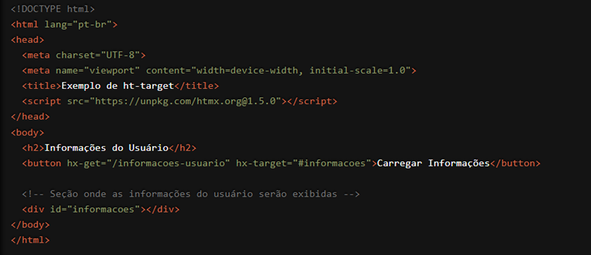

Estamos empolgados em apresentar uma funcionalidade poderosa e essencial do HTMX que transforma a maneira como você atualiza dinamicamente o conteúdo da sua página: o atributo `hx-target`. Com `hx-target`, você pode especificar exatamente onde a resposta de uma requisição HTTP deve ser inserida, proporcionando uma experiência de usuário mais fluida e interativa. Vamos explorar como essa funcionalidade pode elevar o nível das suas aplicações web.
O que é o atributo `hx-target`?
O `hx-target` é um atributo do HTMX que permite definir o elemento da página onde a resposta de uma requisição HTTP deve ser inserida. Isso significa que você pode atualizar de maneira precisa e eficiente partes específicas do seu documento HTML sem a necessidade de recarregar a página inteira. O `hx-target` trabalha em conjunto com outros atributos do HTMX, como `hx-get`, `hx-post`, `hx-put`, e `hx-delete`, para proporcionar uma experiência de usuário mais dinâmica e responsiva.
Como Funciona?
Vamos ver um exemplo prático para entender melhor como o `hx-target` pode ser usado. Suponha que você tenha um botão que, ao ser clicado, deve carregar informações de um usuário e exibi-las em uma seção específica da página:

Neste exemplo, quando o botão "Carregar Informações" é clicado, uma requisição HTTP GET é enviada para a URL "/informacoes-usuario". A resposta dessa requisição será então inserida no `div` com o id "informacoes", graças ao atributo `hx-target="#informacoes"`. Isso permite que a seção específica da página seja atualizada dinamicamente sem a necessidade de um recarregamento completo.